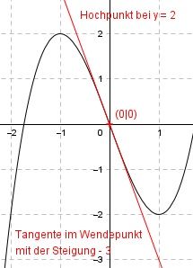
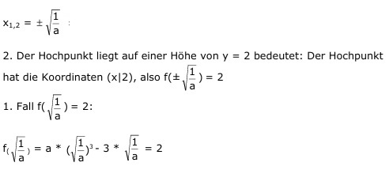
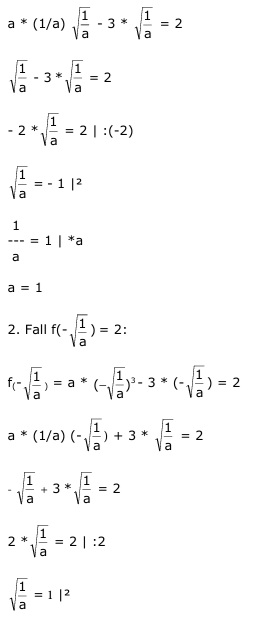

Aufgabe 21 Der Graph einer ganzrationalen Funktion 3. Grades ist punktsymmetrisch zum Nullpunkt, hat im Wendepunkt eine Steigung von -3, und der Hochpunkt liegt auf einer Höhe von y = 2. Wie lautet seine Funktionsgleichung?  Punktsymmetrisch zum Nullpunkt (0|0) bedeutet, die allgemeine Form der Funktion ändert sich zu: f(x) = ax3 + cx (nur ungerade Exponenten von x) f’(x) = 3ax2 + c f’’(x) = 6ax 3 Bedingungen: 1. Punktsymmetrisch zum Nullpunkt (0|0) bedeutet, dort liegt der Wendepunkt des Graphen. Hat im Wendepunkt eine Steigung von -3 bedeutet: f’(0) = - 3 --> 3a * 0² + c = - 3 --> c = -3 c = -3 in die erste Ableitung eingesetzt, um x zu berechnen: 3ax2 - 3 = 0 |+3 3ax2 = 3 |:3a 3 1 x2 = ---- = --- 3a a   1 --- = 1 |*a a a = 1 Gesuchte Funktionsgleichung: f(x) = x3 - 3x Für einen Hochpunkt gilt: f’(x) = 0 und f’’(x) < 0 f’(x) = 3x2 - 3 = 0 | +3 3x2 = 3 | :3 x2 = 1 x1,2 = ± 1 f’’(x) = 6x f’’(1) = 6 * 1 = 6 > 0 --> Minimum f’’(-1) = 6 * (-1) = - 6 < 0 --> Maximum bei (-1|2)